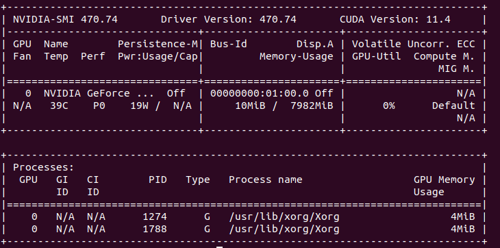

MOSS Installation Guide
Operational System
Microbial Outbreak Surveillance System (MOSS) was designed to run on a linux distribution. It was both developed and tested on various Ubuntu distributions, and it is therefore strongly recommended that users of MOSS use Ubuntu as their operational system. The recommended ubuntu version is 20.04, as this the latest stables version for MinKNOW.
Anaconda
The latest version of Anaconda is required, and the installation guide can be found here: Anaconda Linux Download.
Docker
Docker is required and can be installed from: Docker Ubuntu Installation.
After following the installation instructions above, run the following command in the terminal to complete the and then restart the terminal:
$ sudo groupadd docker
$ sudo usermod -aG docker $USER
$ sudo chmod 666 /var/run/docker.sock
Nvidia CUDA toolkit
Nvidia CUDA toolkit can be installed from: Nvidia CUDA toolkit.
Installing the toolkit can be a bit of a challenge sometimes and requires the correct, updated and working drivers. If installed correctly, the "nvidia-smi" command in the terminal sound promt information about your GPU. Nvidia driver installation challenges can be quite different, so unfortunately no universal easy-fix can be provided. In this situation remember that google is your friend.
The MOSS system was built and tested on a HP ZBOOK studio G8 Mobile WorkStation. The stable kernel which works with the nvidia-510 driver is 5.10.0-1044-oem. For help see: nvidia-smi ubuntu kernel HP ZBOOK.
After a successful installation of the nvidia drivers entering the nvidia-smi command should give the following output:

Oxford Nanopore Technologies software: MinKNOW
For performing the sequencing with Oxford Nanopore sequencers MinKNOW must be installed. It may be downloaded from https://community.nanoporetech.com/downloads or alternatively from directly from the following commands:
MinKNOW Ubuntu 20.04 (Working as of 17/3/2022):
$ sudo apt-get update
$ sudo apt-get install wget
$ wget -O- https://mirror.oxfordnanoportal.com/apt/ont-repo.pub | sudo apt-key add -
$ echo "deb http://mirror.oxfordnanoportal.com/apt focal-stable non-free" | sudo tee /etc/apt/sources.list.d/nanoporetech.sources.list
$ sudo apt-get update
$ sudo apt-get install minion-nc
Guppy GPU for MinKNOW
TBD
Cloning from Github
If git is not installed on the computer, it can be installed from:
$ sudo apt install git
When the dependencies above have been installed, MOSS can be cloned from Github. The cloning and subsequent installation of docker images and MOSS can be done with the following set of commands:
$ git clone https://github.com/MBHallgren/moss.git
$ cd moss
$ python3 moss_install.py
Checking installation
Check that the installation has been successful by running:
$ python3 /opt/moss/src/check_installation.py
Running the moss GUI app
After completing the previous installation steps correctly, it is now possible to run the GUI app by going to the bottom left menu and searching for "moss".